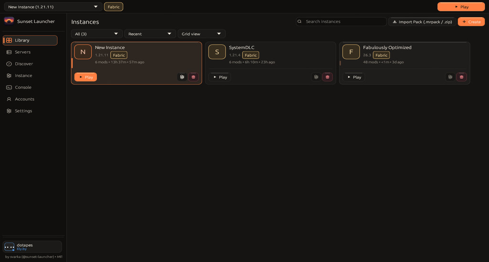

instances/<name>
Изолированные сборки
Создавайте, дублируйте и настраивайте профили в отдельных читаемых папках, чтобы конфиги, моды и миры не смешивались.
Изолированные сборки, каталоги Modrinth и CurseForge, аккаунты Microsoft и Ely.by и локальные серверы в одном бинарнике без Electron и телеметрии

Выберите сборку под свою ОС: установщик Windows, пакет .deb, .rpm или .AppImage для Linux, либо .dmg для macOS.
Укажите версию игры и загрузчик модов или установите готовый модпак из Modrinth и CurseForge в один клик.
Войдите через Microsoft, Ely.by или офлайн-профиль — лаунчер сам подберёт Java и проверит целостность файлов.
От чистой ванили до модпака на 300 модов и локального сервера с туннелем bore
instances/<name>
Создавайте, дублируйте и настраивайте профили в отдельных читаемых папках, чтобы конфиги, моды и миры не смешивались.
.mrpack
Поиск и установка модов, модпаков, ресурспаков и шейдеров с автоподбором зависимостей, импортом и экспортом .mrpack.
До 64 параллельных соединений с потоковой проверкой контрольных сумм SHA-1.
Microsoft OAuth, Ely.by через authlib-injector и офлайн-профили с хранением токенов в OS Keyring.
Локальные серверы Paper, Fabric и Forge с публикацией за серым IP (CGNAT) через bore.pub.
Поток stdout и stderr в реальном времени с фильтрами и диагностикой вылетов.
Прямая интеграция с Mojang, Fabric Meta, Quilt Meta и процессорами установщиков Forge и NeoForge
Интерфейс рисуется нативно через egui без встроенного браузера и сбора телеметрии
Бесплатный open-source лаунчер под лицензией MIT для Windows, Linux и macOS